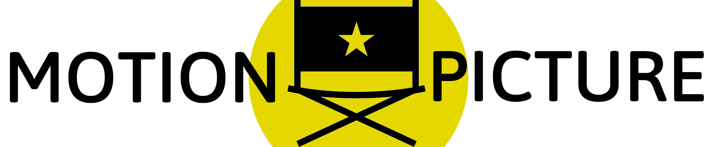

Scientific codes
CliMA packages
I develop and contribute to several packages at CliMA (in particular, I designed and authored ClimaAnalysis, ClimaUtilities, ClimaDiagnostics). While I do a little bit of everything (performance, user interface, physics, reliability, …), one of my main areas of focus is data in its entire life cycle, from ingestion to post-processing and visualization.
kuibit

kuibit is a large Python library to analyze simulations performed with the Einstein Toolkit. The package takes care of all the low-level details and removes most of the friction in studying simulation outputs.
motionpicture
motionpicture is a tool that
simplifies making movies with Python. If you know how to make one frame, with
motionpicture you get the entire movie for free. The package supports a plug-in
system, so you can easily make movies via command-line. After all these years, I
still find motionpicture the easiest way to make animations in Python.
Emacs extensions
emacs-libvterm
I help maintaining emacs-libvterm, the fastest terminal emulator for GNU Emacs. Vterm uses an external library, libvterm, to provide users with an experience that is close to using a full terminal emulator inside Emacs.
ivy-emoji
ivy-emoji is a small utility for Emacs to insert any emoji in a given buffer. It is based on the ivy completion framework and it is available on MELPA. I use it all the time when I chat on telega.el.